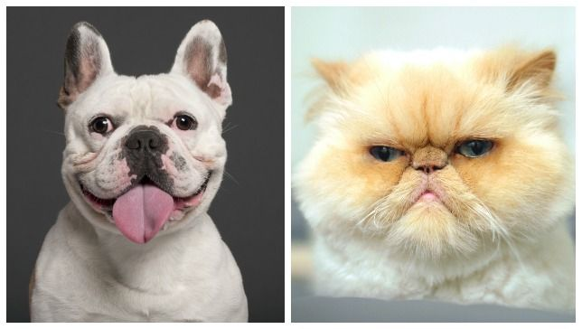
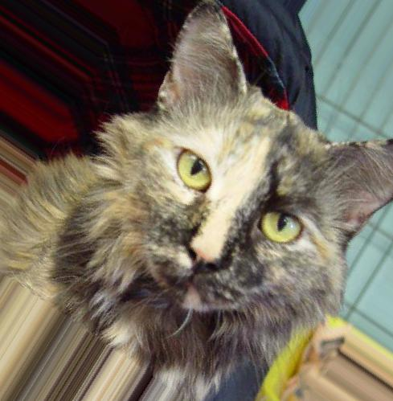
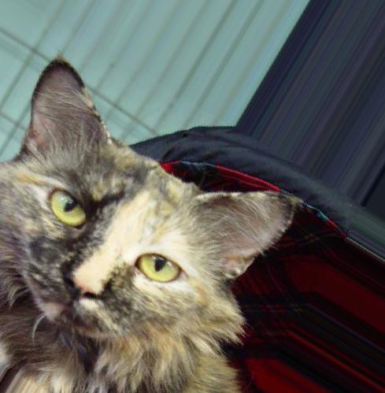
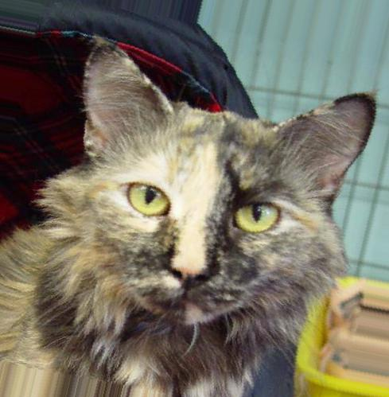
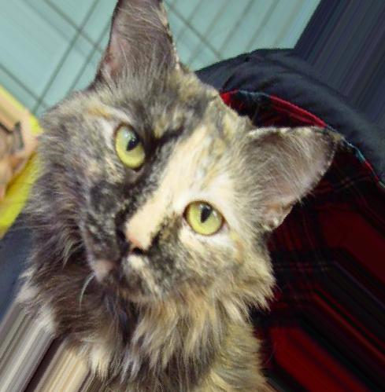

Keras End-to-End Tutorial
Most Keras tutorials I’ve come across outline the process of creating a Convolutional Neural Network (CNN) with built-in datasets. While this is a great place to begin, there’s a bit more involved in terms of pre-processing when starting out with just a bunch of pictures. This post provides a quick, end-to-end walkthrough of how to implement a CNN with Keras in Python from scratch.

Image Preprocessing
We’ll use images of dogs and cats, which can downloaded here, to learn how to build and evaluate an image classifier. We’re only concerned with the images in the test1.zip folder. Once you’ve successfully completed the download, create a file in your working directory named “all_images” and put all of the images there, then load up the packages below.
from keras.preprocessing.image import ImageDataGenerator, img_to_array, load_img
from keras.models import Model
from keras.layers import Input, Convolution2D, MaxPooling2D, Dense, Dropout, Activation, Flatten
import numpy as np
import itertools
import os
import random
Note that you’ll also have to install tensorflow even though its not imported here. It will serve as our “backend”, which means that Keras leverages the capabilities available in tensorflow, like tensor multiplication, when its performing certain operations. This is built with the assumption that tensorflow will be the backend, although you can use others such as theano. However, the code will not run properly unless tensorflow is the backend because the syntax is unique to each backend.
Additionally, the following exercise can be completed in either Tensorflow or Keras. From my experience, both are amazing but the shear ease of implementation with Keras makes it great to just get something up and running.
With that in mind, let’s create all of the remaining directories to store our images.
working_dir = os.getcwd()
all_images_path = "all_images" # where all of the initial images go
train_images_path = 'train_images' # where all of the training images go
augmented_train_images_path = 'train_images_augmented' # where the augmented training images go
test_images_path = 'test_images' # where the testing images go
image_file_ext = 'jpg' # extension for images
# create training, augmented training, and testing directories
os.system('mkdir ' + '/'.join([working_dir, train_images_path]))
os.system('mkdir ' + '/'.join([working_dir, augmented_train_images_path]))
os.system('mkdir ' + '/'.join([working_dir, test_images_path]))
The only variable here that might not be immediately obvious is the augmented_train_images_path. I’ll explain what that means in a little bit. Assuming all three of the directories outlined in prior block were create succesfully, let’s do a little QA. First we’ll check to see if all 25,000 images of dogs and cats are in our all_images directory.
# get all the image names
all_images = os.listdir('/'.join([working_dir, all_images_path]))
print(len(all_images))
# 25000
Looks good. Now we’ll take a random sample from the 25K images to create our training and testing. Our training set will consist of 5000 images (2500 cats, 2500 dogs), while our testing will have 1000 images (500 cats, 500 dogs). I’ve intentionally downsampled here to reduce runtime.
n_test_images = 500
n_train_images = 2500
image_index = list(set([int(x.split(".")[1]) for x in all_images]))
sample_index = random.sample(range(min(image_index),
max(image_index)),
n_train_images + n_test_images)
training_index = sample_index[:n_train_images]
test_index = sample_index[n_train_images:]
Now we’re going to move the image files to the train_images and test_images directories, respectively. We’ll also define our label dictionary, where the key is the label name and the value is a binary indicator.
label_dict = {'cat': [0, 1], 'dog': [1, 0]}
# move images to training directory
for l in label_dict.keys():
for train_i in training_index:
temp_file_name = '.'.join([l, str(train_i), image_file_ext])
temp_file_location = 'mv ' + '/'.join([working_dir,
all_images_path,
temp_file_name
])
temp_file_destination = '/'.join([working_dir,
train_images_path
])
os.system(temp_file_location + " " + temp_file_destination)
# move images to testing directory
for l in label_dict.keys():
for test_i in test_index:
temp_file_name = '.'.join([l, str(test_i), image_file_ext])
temp_file_location = 'mv ' + '/'.join([working_dir,
all_images_path,
temp_file_name
])
temp_file_destination = '/'.join([working_dir,
test_images_path
])
os.system(temp_file_location + " " + temp_file_destination)
Our training and testing images should now be in their respective directories. Next we’ll increase the size of our training set while also reducing the likelihood of overfitting.
Image Augmentation
If you are interested in a more in-depth explanation of what’s going on here, it’s worth checking out the Keras blog. In a nutshell we go through the “image augmentation” process to reduce overfitting while simultaneously increasing the number of training examples.
def augment_images(input_image_path, output_image_path, trans_limit, seperator, label_index):
datagen = ImageDataGenerator(
rotation_range=40,
width_shift_range=0.2,
height_shift_range=0.2,
shear_range=0.2,
zoom_range=0.2,
horizontal_flip=True,
fill_mode='nearest')
count = 1
for i in os.listdir(input_image_path):
img_prefix = i.split(seperator)[label_index] + "_" + str(count)
temp_img = load_img('/'.join([input_image_path, i]))
x = img_to_array(temp_img)
x = x.reshape((1,) + x.shape)
trans_count = 1
for batch in datagen.flow(x,
batch_size = 1,
save_to_dir = output_image_path,
save_prefix = img_prefix,
save_format = "jpg"
):
trans_count += 1
if trans_count > trans_limit:
break
count += 1
if count % 1000 == 0:
print count
Next we’ll extract the label from the filename. The details of each parameter are outlined below.
# current location of the training images
input_image_path = '/'.join([working_dir, train_images_path])
# where we want to write the 'augmented' training images to
output_image_path = '/'.join([working_dir, augmented_train_images_path])
# number of transformations to each image
trans_limit = 4
# the delimeter for each of our files (e.g., 'cat.2.jpg'). We want to retain the label in the image
seperator = "."
# where the label will be after splitting the image name
label_index = 0
augment_images(input_image_path,
output_image_path,
trans_limit,
seperator,
label_index
)
Here is example of the output from the image augmentation process. This is the original image or “regular cat”.

Here’s “rotated cat”.

Oh and don’t forget about “zoomed cat”

Or any of the other blurred, zoomed, or shifted cats either.


You can tell the cat is totally stoked about all of this, but all of these transformations will make the image classification model more robust and less prone to overfitting.
Data Prep
The image-preprocessing part is finished! Next we’ll take all of those pixels and convert them into numbers. The purpose of resizing the image is twofold. First, some of images are rather large. For example, an image that is 500 (height) x 500 (width) x 3 (Channel: Red, Green, Blue) will have 750000 individual data points. Processing thousands or millions of images with this level of dimensionality can take a very long time. Reducing the overall size of the image before transforming it into a matrix can speed up the learning process. Additionally, the images are different shapes and sizes, and we need all of the images to have the same dimensions. The function below, build_input_data, will ingest all of the augmented images, convert each into a numpy array, and then combine them into a larger array.
def build_input_data(input_image_path, image_width, image_height, image_channel):
image_list = []
count = 0
for i in os.listdir(input_image_path):
temp_image = img_to_array(load_img('/'.join([input_image_path, i]),
target_size = (image_width,
image_height,
image_channel)))
temp_image = temp_image.reshape((1,) + temp_image.shape)
image_list.append(temp_image)
count += 1
if count % 1000 == 0:
print count
input_out = np.vstack(image_list)
input_out /= np.max(input_out).astype('float32')
return input_out
We’ll specify all of the requisite parameters then build our training and testing datasets.
image_width = 60
image_height = 60
image_channel = 3
augmented_train_image_path = '/'.join([working_dir, augmented_train_images_path])
test_image_path = '/'.join([working_dir, test_images_path])
x_train = build_input_data(augmented_train_image_path,
image_width,
image_height,
image_channel
)
x_test = build_input_data(test_image_path,
image_width,
image_height,
image_channel
)
Now let’s create our dependent variable. We’ll pull the label from each file’s name for the testing and training images with the following function.
def build_target_data(target_image_path, label_dict, seperator, label_index):
y_out = []
for i in os.listdir(target_image_path):
y_out.append(label_dict[i.split(seperator)[label_index]])
y_out = np.array(y_out).astype('float32')
return y_out
# train y parameters
train_y_var_path = '/'.join([working_dir, augmented_train_images_path])
train_y_var_seperator = "_"
train_label_index = 0
y_train = build_target_data(train_y_var_path,
label_dict,
train_y_var_seperator,
train_label_index
)
# test y parameters
test_y_var_path = '/'.join([working_dir, test_images_path])
test_y_var_seperator = "."
test_label_index = 0
y_test = build_target_data(train_y_var_path,
label_dict,
test_y_var_seperator,
test_label_index
)
Here’s what’s going on above. If we split the filename cat_1_0_1069.jpg based on the underscore character, we get [‘cat’, ‘1’, ‘0’, ‘1069.jpg’], and then take the first element, we get ‘cat’, which is the label associated with a particular image.
Model Building
At this point our training and testing datasets are ready to go, so it’s time to move on to the modeling part. The first thing we’ll do is set all of the parameters up for the model. With Keras the dimensions are in the following order: (n_inputs, height, width, depth). Thus if we have 1000 60 x 60 x 3 images, we’ll have a 4-dimensional array (1000, 60, 60, 3). We also need to specify the number of classes, which we’ll pull from the dictionary containing our labels.
train_n, height, width, depth = x_train.shape
classes_n = len(label_dict.keys())
input_dimensions = Input(shape=(height, width, depth))
The codeblock below contain all of the “knobs” and “buttons” we can turn or push to influence the fitting process. I’ve included some short descriptions above each to give some insight into how it affects the overall model. For more detail on how to interpret the parameters listed below, this is a great tutorial on the inner-workings of CNNs . Note the parameters and structure of the model below are designed for speed – not accuracy.
# in each iteration the model will consider this many training examples at once
batch_size = 50
# we'll iterate over the entire training set 10 times.
epochs_n = 10
# our kernal or window will be a 2 x 2. Smaller kernels extract more detail
# but take longer to run!
kernel_size = 2
# pooling is used to further reduce the dimensionality of our data
pool_size = 2
# depth of our convolution
conv_depth_1 = 32
conv_depth_2 = 64
# dropout is used to prevent overfitting
drop_prob_1 = 0.25
drop_prob_2 = 0.25
# the fully connected hidden layer will have 1024 neurons
hidden_size = 1024
# start of the model
# convolution depth 32 with dropout on the pooling layer
conv_1 = Convolution2D(conv_depth_1, (kernel_size, kernel_size), padding='same', activation='relu')(input_dimensions)
conv_2 = Convolution2D(conv_depth_1, (kernel_size, kernel_size), padding='same', activation='relu')(conv_1)
pool_1 = MaxPooling2D(pool_size=(pool_size, pool_size))(conv_2)
drop_1 = Dropout(drop_prob_1)(pool_1)
# convolution depth 64 with dropout on the pooling layer
conv_3 = Convolution2D(conv_depth_2, (kernel_size, kernel_size), padding='same', activation='relu')(drop_1)
conv_4 = Convolution2D(conv_depth_2, (kernel_size, kernel_size), padding='same', activation='relu')(conv_3)
pool_2 = MaxPooling2D(pool_size=(pool_size, pool_size))(conv_4)
drop_2 = Dropout(drop_prob_1)(pool_2)
# flatten to 1-dimension in our fully connected layer with 1024 notes.
# we'll use Rectified Linear Unit, which rescales any input from -infiniti <--> +infiniti to 0 <--> +infiniti.
flat = Flatten()(drop_2)
hidden = Dense(hidden_size, activation='relu')(flat)
drop_3 = Dropout(drop_prob_2)(hidden)
# using softmax activation to "squish" everything into a probability between 0-1,
output_dimensions = Dense(classes_n, activation='softmax')(drop_3)
# specify here that we have 2 classes
model = Model(inputs=input_dimensions, outputs=output_dimensions) xw
Next we’ll compile the model, specify our loss-function as well as the metric we want to optimize (accuracy). Accuracy is fine to use here, given that our classes are evenly distributed. However, if they were highly unbalanced (e.g., if we had 1000 pictures of cats but 1000000 pictures of dogs), then we’d use a different metric. Additionally, we’ll holdout 20% of the training sample to use for the purposes of validation. I’ve also set the verbose argument = 1, so I can check on the progress of the model.
model.compile(loss='categorical_crossentropy',
optimizer='adam',
metrics=['accuracy'])
model.fit(x_train,
y_train,
batch_size=batch_size,
epochs=epochs_n,
verbose=1,
validation_split=0.2)
Fitting the model on my laptop took about 20 minutes, which should be enough time to finally fold that pile of laundry at the end of your bed. Once it’s finished, let’s see how we did. We’ll use the get_prediction_labels function below (Note: I’m pretty sure Keras has a built-in function to do exactly what’s going on below, but I just couldn’t find it in the documentation).
def get_prediction_labels(y_prob, num_classes):
out_list = []
for j in y_prob:
list_of_zeros = [0] * num_classes
list_of_zeros[int(np.where(j == max(j))[0])] = 1
out_list.append(list_of_zeros)
return out_list
# generate predictions for classes probabilities
y_prob = model.predict(x_test,
verbose=1)
# convert highest probability to a 1, all others to 0
y_class_pred = get_prediction_labels(y_prob,
classes_n)
# evaluate our accuracy
num_correct = 0
for i in range(1, len(y_class_pred), 1):
num_correct += int(list(set(y_class_pred[i] == y_test[i]))[0])
print "CLASSIFICATION ACCURACY: {pct_correct}%".format(
pct_correct = str(float(num_correct)/len(y_class_pred) * 100))
My prediction accuracy was 76.8%, which is better than chance but a far cry from the team that achieved an accuracy of 98.9% during the Kaggle competition using this same dataset. This is OK because we weren’t trying to build the world’s most accurate model. Hopefully this post has clarified any major questions about getting your first CNN up and running in Python. I saw the other day that Keras now has an interface for R as well. I’m planning on recreating the above tutorial when I get a little bit more time in R, simply to compare between the two languages. Stay tuned!
comments powered by Disqus